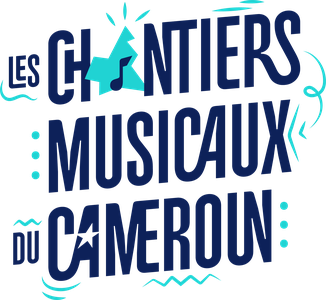

Plus de six mois de concertation, en 2024, pour diagnostiquer la filière, renforcer ses acteurs et poser les bases d'un schéma de développement. Avec le soutien de l'Ambassade de France au Cameroun et de l'Institut français, dans le cadre du Fonds Équipe France.
64
professionnels des dix régions
3
étapes à Douala et Yaoundé
21
intervenants présentés pour la phase 2
144
pages pour le schéma de développement

Le déroulé
Trois étapes, de l'état des lieux à la stratégie
Étape 01 · Douala · 8 au 10 février 2024
L'état des lieux
64 professionnels des dix régions, issus de la production, de la promotion et de la diffusion, ont travaillé en ateliers par grandes aires culturelles : septentrion, Grassfields, peuples de la forêt et Grand Sawa. Objectif : comprendre comment fonctionne le secteur et identifier ce qui l'empêche d'éclore.
21 producteurs
20 acteurs de la promotion
23 acteurs de la diffusion
Étape 02 · Yaoundé · 18 au 22 mars 2024
Le renforcement des capacités
Lancée le 18 mars 2024 à la médiathèque de l'Institut français de Yaoundé, en marge du Yaoundé Music Expo, la deuxième étape a proposé plus de 16 ateliers : gestion de projets musicaux, marketing digital, distribution, droits d'auteur et droits voisins, entrepreneuriat, stratégies de diffusion.
Plus de 16 ateliers
12 experts internationaux
25 formateurs camerounais
Étape 03 · Yaoundé · juin 2024
La restitution
L'Introduction au schéma de développement de l'industrie musicale camerounaise a été présentée aux pouvoirs publics, aux institutions et aux organisations professionnelles, en marge de la Zone by DOMAF, pour contribuer à une politique culturelle nationale.
Document de 144 pages
Versions française et anglaise
Prochaine étape : un schéma stratégique complet
Phase 2 · Yaoundé, 18 au 22 mars 2024
Les intervenants
Experts camerounais et internationaux, artistes, managers, juristes, journalistes et dirigeants d'entreprise ont partagé leur expérience avec les professionnels sélectionnés.
Lancement officiel de la phase 2, 18 mars 2024, Institut français de Yaoundé.
Cameroun
Freddy Tchala
Country Manager, Activa Assurance
Cameroun
Walter Ebelle Eboumbou
Directeur général de Keyzit Cameroun, fondateur d'Arise Entertainment
Cameroun
Robert Ekotto
Directeur du sponsoring, Orange Cameroun
Cameroun
Richard Eboa
Artiste, manager et consultant
Cameroun
Daniel Ndiewan
Responsable chez FOCEP S.A.
Cameroun
Mike Epaka
Consultant spécialiste du marketing et de la publicité
Cameroun
Lionel Tousse
PDG du groupe ICONProd, fondateur du label ICON Fusion
Cameroun
Jean Eudes Biem
Cerdotola
Cameroun
Jacques Mouen
Strategic Marketing Leader
Côte d'Ivoire
Inès Abichou
Abidjan
Cameroun
Charles Elame
Consultant marketing et go-to-market
Nigéria
Ruby Gyang
Autrice-compositrice-interprète
Martinique
Mylène Emica
Directrice artistique de Seize mètres carrés
Guinée
Mory Touré
Journaliste culturel, fondateur de Radio Afrika
Nigéria
Kayode Adebayo
Fondateur de Ckrowd.com, président de KAM Africa
Sénégal
Ibaaku
Producteur, multi-instrumentiste et compositeur
France
Céline Bakond
Fondatrice de La Neuvième Muse
Cameroun
Carole Tchameni
Directrice de la programmation, Trace Mboa
Cameroun
Blick Bassy
Auteur-compositeur-interprète
Ghana
Antoine Mensah
Cofondateur d'Aftown Music
Nigéria
Akinyemi Ayinoluwa
Associé, HighTower Solicitors and Advocates
En vidéo
Les Chantiers musicaux en quatre minutes
Le document
Ils ont contribué au schéma de développement
Avec l'appui de nombreux professionnels remerciés dans le document, ces contributeurs ont rédigé l'Introduction au schéma de développement de l'industrie musicale camerounaise.